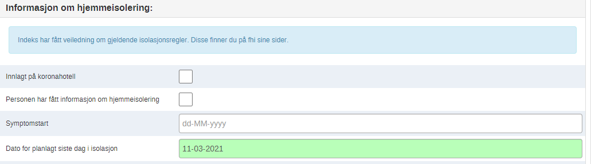
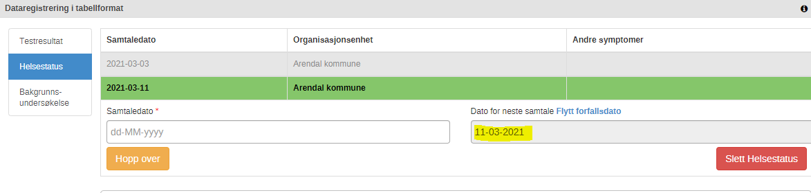
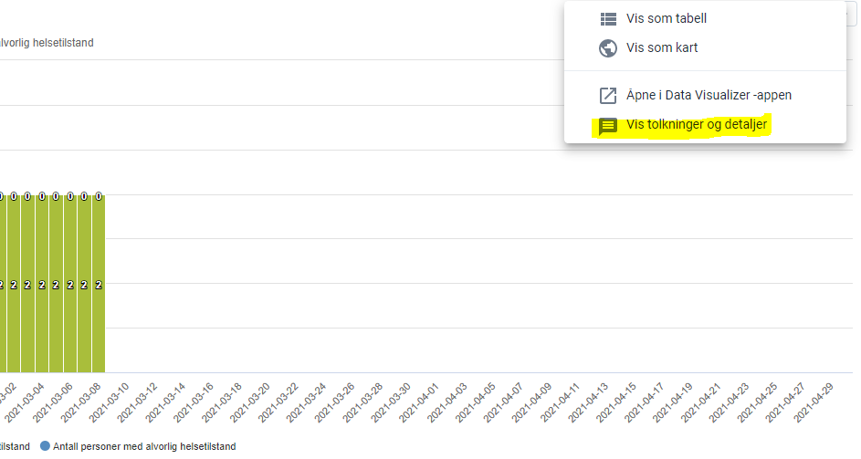
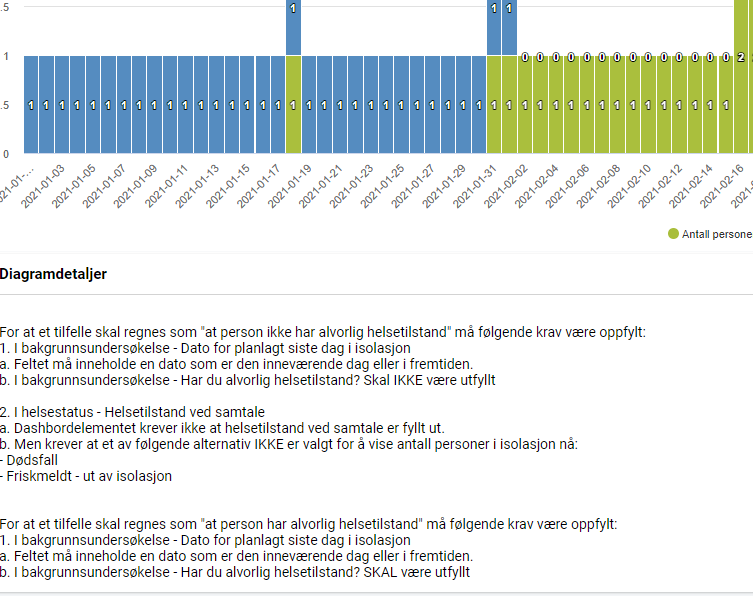
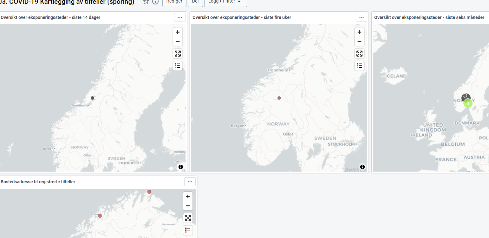
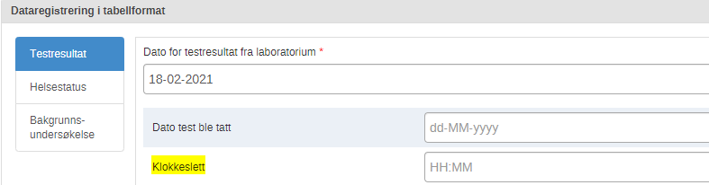
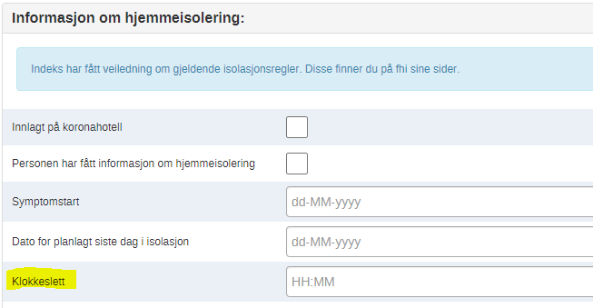
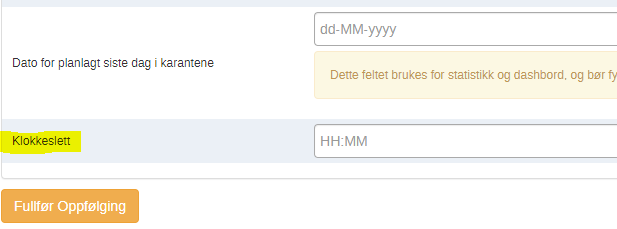
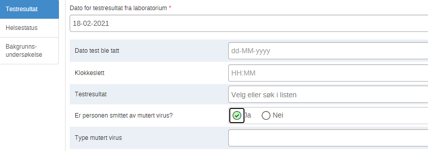

Release notes version 1.14.0
Rettelse - Arbeidslister - Automatikk
Det går et script hver natt, som automatisk oppretter en planlagt helsestatus basert på siste dag i isolasjon. Det har ikke fungert på en stund, men dette er rettet på denne versjon.
Den vil nå opprette en helsestatus basert på siste dag i isolasjon på alle aktive indekser som ikke har det. Det vil si at på alle som har en fremtidig isolasjonsdato, vil nå hoppe til indeksoppfølging i dag når siste isolasjonsdag er kommet.
Eksempel:
Hvis sise dato i isolasjon er:

Arbeidsprosess:
- Åpne tracker catpure. Registrer en case
- Fyll ut en helsestatus
- Fyll inn en dato for planlagt siste dag i isolasjon. Du kan nå gå ut av denne personen
- Dagen etter registrering, gå inn på personen og se på helsestatus.
- Du vil da se en planlagt helsestatus basert på siste dag i isolasjon som vist i bildet under. Personen kommer da over i oppfølging i dag listen på denne dato.

Dashbordbeskrivelser
Da det kom litt uklart frem hvilken periode som ligger på noen dashbord elementer, har jeg oppdatert på de jeg ser at det er uklart på. Hvis det skulle være flere så vil vi gjerne ha beskjed på hvilke elementer hvor det ikke kommer frem. På de fleste står det i boksen om det er idag, igår, siste 7 dager osv.


Hvordan ser jeg dette?
- Gå til dashbord
- Velg et aktuelt dashbord hvor det ligger et element du ønsker å lese kravene til
- Trykk på 3 prikkene på et dashbordelement og vis detaljer og tolkninger
Kartløsning
Kartene er rettet, slik at punkter skal komme frem når man legger inn koordinater på bostedsadresse, eller eksponeringssteder. Dette bør fungere i prod nå etter oppdatering

Arbeidsprosess
- Åpne tracker capture
- Åpne en indeks
- Legg inn kart koordinater på bosted under personprofil
- Gå til bakgrunnsundersøkelse
- Legg til kart koordinater på sted for kontakt, og legg til et sted for kontakt (Husstand, arrangement osv)
- Gjør dette gjerne på 3-4 indekser, som er registrert innenfor disse periodene:
- Siste 14 dager
- Siste 4 uker
- Siste 6 måneder
- Dette vil komme opp som punkter i kartet når hver hele time har gått, da elementene blir oppdatert.
Til informasjon:
På bosted ser man alle bosteder som er registrert med koordinater fra korona kom til Norge og 5 år frem i tid.
Klokkeslett i registrering
Nye elementer er lagt til under testresultat, informasjon om hjemmeisolering, og siste dag i karantene:



Arbeidsprosess:
- Åpne tracker capture. Åpne en indeks du har registrert
- Sjekk at felt for klokkeslett er satt inn på følgende steg:
- Testresultat
- Helsestatus hvis man velger har covid-19 symptomer, innlagt på sykehus eller innlagt på sykehjem
- Bakgrunnsundersøkelse - ved dato for siste dag i isolasjon
- Gå til nærkontaktregistrering
- Se på steget oppfølging
- Under dato for siste dag i karantene skal man se et felt for klokkeslett
Element for mutert virus
Vi har lagt opp en enkel versjon for å kunne legge til om det er mutert virus eller ikke.
Hvis man trykker ja på mutert virus, vil man få et kommentarfelt hvor man kan skrive hvilket mutert virus det er snakk om:

Hvordan ser jeg dette?:
- Åpne tracker capture. Åpne en indeks du har registrert
- Gå til steget: Testresultat
- Se til at følgende felter kommer opp:
- Er personen smittet av mutert virus? - Trykk Ja. Se om feltet under kommer:
- Type mutert virus.